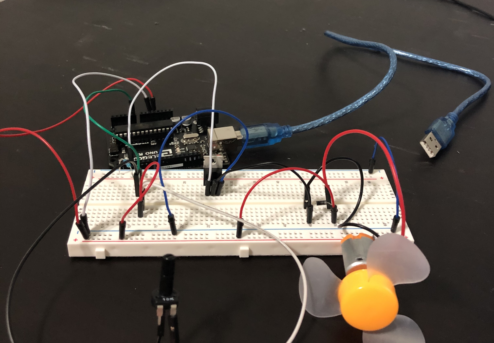

Seung Won's Final Project!

The sketches above show the evolution of the concept for my final project. From the beginning I wanted to create a small fan that had multiple settings that could be manipulated by input from a user. However, in my first draft I thought about using a button that the user would press so that they could change settings but I realized that it would be a bad interface for the user. So, I changed the input to a dial that they could twist to change settings. That is how I ended up with my final concept of a small fan powered by the arduino with settings that could be manipulated by a dial.
The code used to accomplish this is shown below it is a fairly simple code utilizing an if else statement and analog read and write.
The arduino code
#define fancontrol A0 //gives pin A0 the name fancontrol
int fanPin = 3; // sets value of int variable fanPin to 3
void setup() {
Serial.begin(9600); //sets serial speed
pinMode(fanPin, OUTPUT); //sets pin 3 on arduino to output
}
void loop() {
int theValue = analogRead(fancontrol); // sets the variable theValue to whatever value is read in from the potentiometer
Serial.println(theValue); // prints that value to the serial monitor so that it can be checked
if (theValue > 950) { // checks if theValue is greater than 950 if it is then the code inside is executed
analogWrite(fanPin, 255); // sends the highest amount of power to the motor
} else if (theValue < 680 && theValue > 640 ) { // checks if theValue is both bigger than 640 and smaller than 680 and if it is runs the code inside
analogWrite(fanPin, 128); // sends medium amount of power to the motor
} else { // if the value does not pass the previous tests execute the code inside
analogWrite(fanPin, 0); // sends no power to the motor
}
}

The image above shows the circuit used for this project. It utilizes a motor, N-MOSFET Transisitor, flyback diode, and potentiometer. First we see the motor connected to the breadboard with a flyback diode to prevent the flyback itself. It is then connected by a wire to the drain of the N-MOSFET. The MOSFET is also connected to ground at the source which also grounds the motor, and for its gate it is connected to the 3 pin on the Arduino. Having the motor connected to 3 is also what allows us to analogWrite to the motor. For the other part of the fan we have the potentiometer. The potentiometer is connected to the 5V pin on the arduino through its in pin then on its out it is connected to ground by a 10K resistor, which is put in place in the case that the potentiometer's resistance is set to zero, and to the A0 analog pin by a wire. By having this set up we are able to make changes to the potentiometer and based on the data the changed potentiometer gives to the arduino make the motor have different behavior.

Finally we have the schematic for this project. There is a bit of an edit because I had originally thought about having the motor connected to a 12V power source but in the end just connected it to the arduino as well in order to reduce the number of wires and have it better fit in the encasing I created. With that in mind. This schematic shows the potentiometer connected to 5V of power, the A0 pin and to ground through the 10K resistor. On the other side we have the motor also connected to the 5V power source, with a flyback diode and connected to the trasistor which connects the motor to pin 3 and ground.
Finally, here is the link and video of my project's demo: My Project Demo!